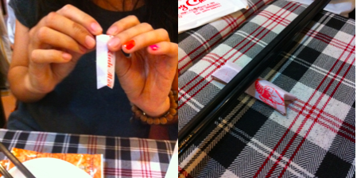
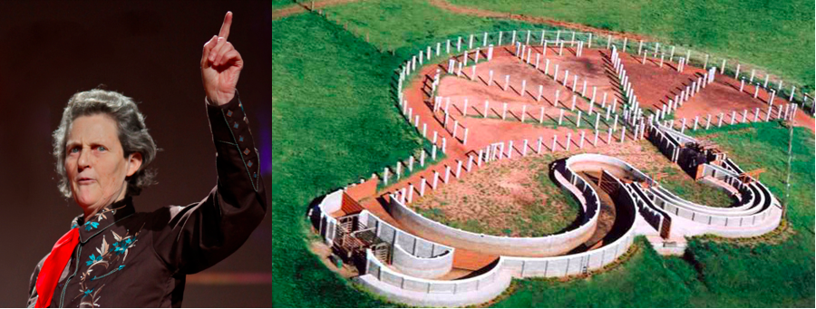
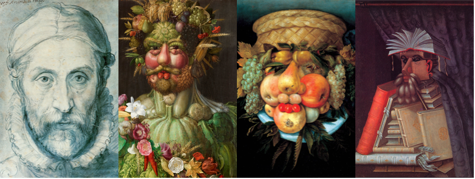
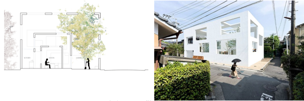
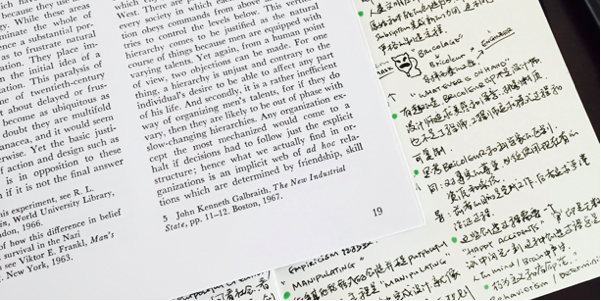

Adhocism这个词对我来说非常陌生，它被翻译成局部独立主义，并不太喜欢这个生硬的翻译，找不到一个贴切的词把其中那种肆意的任性表达出来，权且叫它“局部独立主义”。
此篇是《Adhocism: The Case for Improvisation》一书第一章的记录，因为巧合的原因了解到这本书，也相信它能够像之前《Speculative Everything》一样继续扩充和打磨我的设计观和内在世界。
本书成于1972年，在那个纯粹主义和现代主义教义盛行的时代，它所提供的一种颠覆式的思考方式，是新建筑和设计时代新精神的代言。
本能的创造
虽是颠覆，但所谓Adhoc却并不是一个新的概念，这是人类最原始的创造行为，它的模式是：
- 一定有一个目的；
- 组合或使用手边能够使用的物件；
- 快速完成；
每天也许你都在经历着这个模式的行为，例如用洗碗布去垫滚烫的汤锅以免烫坏桌面、用筷子外的纸壳做筷架、拿碗底来做磨刀石。

而这样细小的本能创造行为却在一点点被工业时代的产品和包裹其外的消费主义糖衣消退，生产者联合设计师不断寻找生活的空隙，包裹一个或富有情怀、或充满品质、或未来或历史的外壳，制造出质感的桌垫、或者不会被烫伤的原石、充满禅意的筷架、或是黑曜般低沉凝重的砾岩，于是你不再有机会用你的直觉创造那些手边的小物件、只属于你的秘方。
这便是Bricolage所形容的场景。Bricolage是法语tinkering的意思，这也是在《设计研究与创新的关系》一文中曾经提到“随机创新”的概念。
Bricolage所对应的Bricoleur一词难以找到合适的翻译，它代表着使用手边物独立创造的手艺人，即不像设计师样追求美感和深意、也不像工程师执着于算法和可演进、更不追逐利润或产品化，他们的创造过程完全从目标出发，并只利用手边之物。
1963到1973年间，美军在老挝投放了超过200万吨炸弹，直到今天，随处可见的炸弹残骸成了老挝人民生活的一部分，大量炸弹外壳或者飞机邮箱被制作成各式各样的生活用品，这样主动的创造行为往往被主流世界所忽视。与炸弹共同生活几十年的老挝人会将炸弹的残骸制造出各种工具，甚至包括寺庙的钟：
被退化的创造本能
Temple Grandin的自闭让她沉迷在外婆家的农场，作为上世纪最伟大的动物学家，她设计的屠宰场让动物们在一系列被设计好的关键控制点管理下平静快乐地被屠宰。身处信息时代的我们，也似乎某些更加复杂的关键控制点驱使着，走向死亡，而浑然不觉。

这些控制点，要么是安慰剂让人暂时遗忘平庸、要么是驱使我们行进的。在文章中，统一化的产品是平庸的安慰剂，精英主义和阶级是“创造天性”的扼杀者，最后的结果是大量浑然不觉的民众、少数精英、一套经典的上升通道、意识形态上的自证预言。
我之所以讨厌“那个杯子”，就是因为它包裹着文化、故事、理念、所谓情感化的设计，把一个凉白开的简单问题，变得“看似简单”的复杂。
同时，一套“创新是随机产生”的概念也在让人们丧失主动创造的天性，他们描述这一个场景：像诗人通过组合不同词汇寻找灵感一样，大量的创新是通过尝试、失败、尝试的循环完成，我们总在等待一个“美好的意外（Happy Accident）”——成功的那一刻。就像达尔文主义和宿命论（Fatalism）的追捧者所说：总有一天你会得到。而在作者看来，这种消极的宿命一说，让人逐步失去“主动创新”的意愿和能力。
此外，阶级和精英所潜意识行为所造成的影响，使人们陷入“自我预证”的圈套，产生思维定式。著名的实验是告诉老师哪些孩子是高智商，最后那些被认定“高智商”的孩子确实获得了更好的成绩，但事实上所谓“高智商”儿童只是随机挑选，并无智商区别，在一个有威权和阶级的环境下，人们的行为往往由上层阶级影响，无论阶级关系的强弱。
因此，退化的创造本能受三个因素影响：
- 即时满足或过度满足的标准化商业产品让主动创造失去机会；
- 意识形态和传统思维观念人们从不换一个角度思考创造力；
- 阶级和精英影响让人们盲目接受暗示，放弃主动创造的机会；
Adhocism与后现代主义
16世纪意大利风格主义（Mannerism）画家朱塞佩·阿尔钦博托（Giuseppe Arcimboldo）绘制了一系列由水果、蔬菜、树根、鸟兽等物件组成的肖像画，这种随机产生和拼凑的表现形式，被认为是符合局部独立主义精神的。这种奇特近乎奇幻的设计风格对后世的超现实主义（Surrealism）有着重要的影响。朱塞佩·阿尔钦博托用水果、蔬菜、树根等物件组成的肖像画，最右侧那副的名字叫做《图书管理员》：

阿尔钦博托画作手法中的“随机”和“拼凑”正是超现实主义两种基本手法“自动书写（Automatic Writing）”和“精致尸体（Exquisite Corpse）”的精髓，前者是不具备目的性、释放创作潜力的书写或者素描，过程比结果更加重要，强调每个人都是艺术家、都可以通过自动书写的方法来释放个人潜能;而后者则是1925年流行与巴黎和新大陆文人之间的文字游戏，第一人取纸写下句子、封好、邮寄、再由大洋彼岸的文人完成下一句，最后形成一种拼接的全新体验，这也是“精致尸体”一词的来历——两个完全不相关的词语的拼接。
无论是“自动书写”还是“精致尸体”，基本原理都是使用理性的过程（固定的模式）、在潜意识中探索更加宽阔的崭新疆界、获得非理性的结果，在精神（非理性的过程和结果）、和物质（理性的过程和结果）中找到第三种“可能”，这便是对“二元论（Dualism）”体系的突破。
Adhocism并非上述设计风潮的根源，它只是后现代主义的一部分，它具有浓重的后现代主义风格，即反对工业时代以理性为中心、反对主流和二元论、反对功能主义和实用主义、鼓励现代工业社会之前和资本主义文明之前生活方式、以及反思现代主义带来的负面作用。
Adhocism继承了超现实主义中随兴而作的部分，但更多带有强烈的反消费与世俗、鼓励重用和组合而非重新创造、并回归自然生活的意味。这一特点符合“后工业时代（Post-industrial Times）”人类的思考模式：我们应该如何处理后工业时代留下的遗产？面对那废墟我们应该如何重新思考我们的创造过程？
就像超现实主义中模糊精神和物质一样，对于建筑而言，在后工业时代的框架下，被模糊的（或其挑战的）是“时间的疆界”——建筑的终点不再是废墟：巴萨罗那瓦尔老城区的改造与建筑再循环理论将建筑的时间疆界拉长；以及“空间的疆界”——建筑不再是区隔人与环境的边界：藤本状介的建筑新秩序打破了人、建筑、自然的传统区分。

模糊即是打破，同样，超现实主义影响下的Adhocism也是在打破人们对设计和产品的固有观点：
- 设计应该是完美的；
- 设计是应该符合大众需要的；
- 设计应该是经典的；
- 设计应该是有情趣的；
相反：
- 设计可以是瑕疵的甚至凭凑的；
- 设计可以是只符合我的需要的；
- 设计是可以不断变化和可抛弃的；
- 设计过程才是有情趣的。
写在最后
这篇文章写了将近半个月，零零散散看了几十篇相关或不相关的文章，我突然发现，我写的什么已经并不重要了，这本书首章的观点也没有那么重要了，七拼八凑的观点好像一个与自己游戏的“精美尸体”，但到最后却深感清晰了很多。

知识的本质有些是在扩充你的认知疆界（深与广），有些则是在打破那些认知局限（通与达），这些局限往往是那些经典，如HCI、如Design Thinking，持续不断抛弃你所深信的观点、打破那些局限，这既是Adhocism精神的追求，也是学习的精髓。
延伸阅读
参考1：Bricolage, Bricoleur: What is It?
参考2：陸小璇：炸彈、樹木和黃金